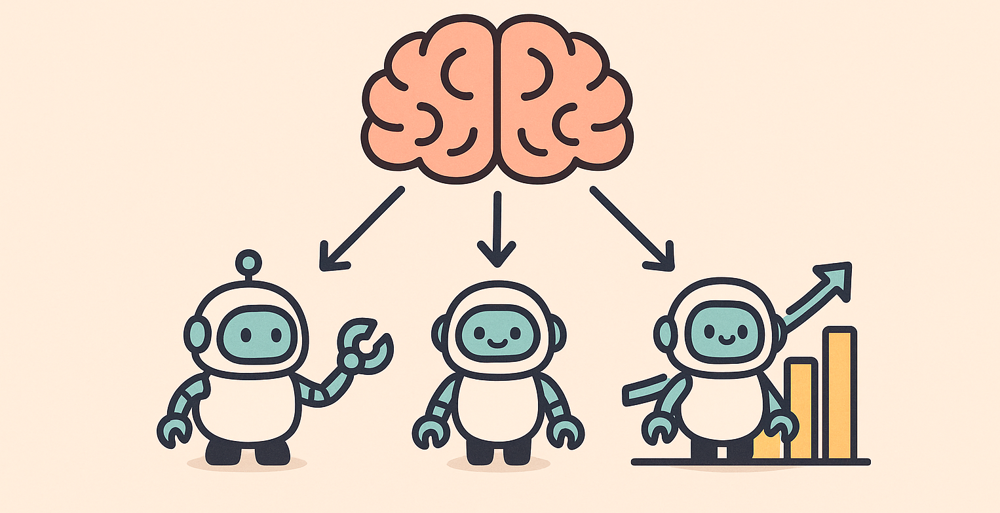

Reinforcement Learning : A3C
Asynchronous Methods for Deep Reinforcement Learning
논문소개
Asynchronous Methods for Deep Reinforcement Learning
Simple and lightweight Deep Reinforcement Learning framework
- multi core CPU instead of GPU.
- Asynchronous gradient descent
- Parallel
- A3C
Introduction
Deep nueral networks가 Reinforcement Learning(이하 RL)에 들어오면서 RL은 많이 유용해졌다. 그러나 단순히 On-line RL에 neural networks을 사용하는 것은 fundamentally unstable하다. on line RL agent가 observe하는 data sequence는 non-stationary하고 on-line RL updates는 high correlated 되어있기 때문이다. 이 문제는 experience replay memory를 활용하면 memory에 experiences를 저장하고 batch단위로(!non-stationary) randomly sampling(!high correlation)할 수있어 어느정도 해소가 된다. 그러나 이는 off-policy에 국한된 얘기이다. on-policy에는 여전히 문제가 남아있다.
본 논문에선 experience replay가 아닌 비동기 방식으로 multiple instances of environments에서 여러 agent들을 parallel하게 사용해서 agent’s data를 non-stationary로 decorrelate한다. 어떤 특정 time step t에서 parallel agent들은 (대부분) 다른 state들을 경험할 것이기 때문이다.

이렇게 비동기 방식으로 처리를 하면 on-policy에서도 위의 문제를 해결할 수 있다. 또한 이 비동기 방식은 Q-learning같은 off-policy 에도 적용가능하다. 그래서 RL에 neural networks를 안정하게 더욱 넓고 효과적으로 사용할 수 있게 되었다.
또한 위 방식은 GPU를 사용하는 대신에 multicore CPU를 사용했는데, 속도 또한 빨랐다고 한다.
Related Work
distributed setting과 parallism에 관한 연구들을 소개하고있다.
Gorila distributed setting에서 agent들을 비동기 방식으로 학습시켰다. 각각의 process는 하나의 acotr, 하나의 replay memory, 하나의 learner를 갖는다**.**
actor는 environment를 copy한 자신만의 environment와 interaction한 후 replay memory에 저장한다. learner는 replay memory에서 data를 뽑아 policy parameter에 대한 DQN loss의 gradient를 계산한다. 이 gradient들은 비동기적으로 central parameter sever에 보내져 central copy of the model을 update한다. 그리고 그 update된 parameter는 일정한 간격으로 actor-learner들에 보내진다.

Li & Schuurmans, 2011
Map Reduce framework을 Batch reinforcement learning methods에 적용했다. Neural network이 아닌 linear function approximator를 사용했다.
Parallelism이 large matrix operation을 빠르게 처리하도록 사용되었지만
Experiences을 모으는것을 병렬화 하거나 학습을 안정적으 진행되로록 만드는데는 사용하지 않았다.
Grounds & Kudenko, 2008
여러 separate된 actor-leaner들을 사용해서 학습을 가속화할 수 있도록 Sarsa에 parallelism을 적용했다. 각각의 actor-learner은 각자 학습을 한 후 주기적으로 update된 내용을 보내고 이 내용들을 다른 러너들이 peer-to-peer communication을 사용한다.
Tsitsiklis, 1994
비동기로 최적화시키는 setting에대해 Q-learning의 수렴성을 연구했다. Q learning은 몇개의 정보가 오래됐을 때, 오래된 정보가 버려지고 몇가지 기술적인 가정이 충족되면 수렴된다고 한다. distributed dynamic programming 문제에 대한 연구도 했다고 한다.
Others
Parallizing에 대해 굉장히 직관적으로 받아들일 수 있는 Evolutionary methods(진화 알고리즘)을 이야기한다. 이는 multiple machine이나 threads에서 fitness evaluation을 해서 parallelize하는 방식인데, visual reinforcement learning task에 적용된 사례도 있다고 한다.
Reinforcement Background

agent는 environment와 interaction한다.
time step t에서 state를 받고 apolicy를 따라 action을 선택하면 envirionment가 next state과 reward를 agent에게 넘겨준다. 이 과정의 반복일 뿐이다. agent는 각 state에서 expected return을 최대화하는 것을 목적으로 한다. 여기서 return은 $R_t = \sum {k=0} \gamma^k r{t+k}$ 으로 formulate된다.
action value function은 $Q^\pi (s,a) = \mathbb E [R_t |s_t = s,a]$ 정의된다.
즉 state s에서 action a를 취하고 이후에 policy $\pi$를 따랐을 때 받는 expected return이다. 여기서 optimal action value functinon은 $Q^*(s,a) = max_\pi Q^\pi (s,a)$ (achievable by any policy)로 정의되고 maximum action value를 주는 것을 말한다.
value function은 policy $\pi$를 따를 때, state s의 value,즉 expected return을 나타낸다.
$V^\pi (s) = \mathbb E [R_t |s_t = s]$
Value based
Q를 neural network로 근사시키는 것을 말한다. Q를 어떻게 학습시킬지에 따라 다양한 알고리즘이 있고, 대표적인게 Q-learning이다.
One-step Q-learning에선 Q-function을 loss function들의 sequence를 반복적으로 minimize하는 방식으로 학습시킨다. i번째 loss function은
$$ L_i(\theta_i) = \mathbb E (r + \gamma max_{a'} Q(s',a';\theta_{i-1}) - Q(s,a;\theta_i))^2 $$
으로 정의되고 여기서 prime ‘ 은 next를 의미한다. 여기서 reward r은 오직 이 reward r을 만들어낸 (s,a) pair의 value에만 직접적으로 영향을 미치고 다른 state action pair는 간접적으로만 영향을 받는다. 그래서 이 reward r이 다음 state action pair들에 영향을 미치려면 update를 많이 해나가야돼서 학습 속도가 느리다.
n-step Q-learning은 이 문제를 해소한다. 여기선 Q(s,a)가 n-step return이 되도록 학습이 된다.
$$ Q(s,a) \leftarrow r_t + \gamma r_{t+1} + \cdots + \gamma^{n-1}r_{t+n-1} + max_a \gamma^n Q(s_{t+n},a) $$
Policy-based
poilcy를 바로 parameterized하고 gradient ascent 방식으로 $\mathbb E [R_t]$를 최대화 하도록 학습시킨다. REINFORCE가 대표적인 예시로 $\nabla_\theta ;log\pi(a_t|s_t;\theta)R_t$ 의 방향으로 theta를 update를 한다. 이는 $\nabla_\theta\mathbb E [R_t]$의 unbiased estimate인데 이를 unbiased를 유지하면서 variance를 줄이려면, return에서 baseline을 빼면된다. 여기서 baseline은 state의 learned function $b_t(s_t)$이고 이를 적용해 gradient를 때리면
$$ \nabla_\theta ;log\pi(a_t|s_t;\theta)(R_t -b_t(s_t)) $$
이 된다.
보통 $b_t \approx V^\pi(s_t)$로 근사시켜 policy gradient 값의 variance값을 줄인다. 이런 근사를 하고나면 $R_t -b_t$는 $R_t$는 $Q^\pi(a_t,s_t)$ 의 estimate이고 $b_t$는 $V^\pi(s_t)$의 estimate이므로, state s에서 action의 advantage가 된다.
$$ A(a_t,s_t)= Q(a_t,s_t) -V(s_t) $$
Policy $\pi$를 actor, baseline $b_t$ 를 critic이라 하면 actor-critic architecture가 된다.
Main
Asynchronous actor-learners
multiple CPU threads on a single machine, instead of using separate machines and a parameter server(Gorila)
→ Gorila에비해 machines과 server간의 communication 비용을 줄임
Using different exploration policies in each actor-learner
less correlated and stable
reduction in training time
on-policy as well as off-policy
Asynchronous one-step Q-learning

각각의 thread에서 environment를 복사해 그 environment와 interaction시킨다. 그리고 각 스텝에서 Q-learnig loss의 gradient를 계산한다. DQN처럼 Q-learning loss를 계산할 때 shared and slowly changing target network를 도입했다. 그리고 여러 time step에서 계산된 gradient들을 모은다. 이 과정은 서로의 update된 내용들을 overwrite 할 가능성을 줄이고 data efficiency와 computational cost간의 trade off 를 조절할 수 있게한다.
또한 각각의 thread에 다른 exploration policy를 줘서 robustness를 향상시켰다. exploraiton의 다양성을 추가하는건 exploration을 더 잘해서 더 좋은 성능을 내기 때문이라 생각하면 된다. 여기선 epsilon greedy 를 사용했다.
Asynchronous one-step Sarsa
위의 방식과 동일한데 Q function의 target value만 다르다. target value가 $r + \gamma Q(s',a';\theta^-)$이다. target network와 update를 gradients을 multiple timesteps들에서 accumulate해서 사용한는 방식도 동일하다.
Asynchronous n-step Q-learning

n-step returns을 backward view방식이 아닌 forward view로 얻는다. 이는 neural networks을 momentum과 bpp로 학습시키는 것을 더 편하게 한다고한다.
update를 시키는 것을 보자. 한번의 update를 위해선 exploration policy(여기선 epsilon greedy)를 사용해 $t_{max}$ step 혹은 episode가 중간에 끝난다면 그 시점까지 action을 취한다. 즉 한번의 업데이트 이후 다음번의 업데이트가 일어나기 전까지(중간에 episode가 끝나지 않는다면) agent는 총 $t_{max}$개 만큼의 reward를 받는다.
그 후 gradient를 계산한다. 가능한 가장 긴 n-step return을 사용하는데, 예를들어 마지막 state는 one-step update를 , 뒤에서 두번째 state는 two-step update를, 이렇게 하다 마지막엔 전체에대해선 $t_{max}$ update를 사용한다. 이 update(or gradient)들을 accumulate하고, 이를 single gradient step에서 사용한다.

forward view. We decide how to update each state by looking forward to future rewards and states.
Asynchronous adavantage actor-critic ⇒ A3C

- Policy $\pi(a_t|s_t;\theta)$
- Estimate of the value function $V(s_t;\theta_v)$
n-step Q-learning과 마찬가지로 forward view 방식으로 작동하고, update를 위해 n-step returns을 활용할 것이다. policy와 value function은 $t_{max}$개의 action을 취한 후 update가 될 것이다. 만약 중간에 episode가 끝나면 그 때 update 시키면 된다.
update rule은 다음과 같다.
$$ \nabla _{\theta'} log \pi(a_t|s_t;\theta')A(s_t,a_t;\theta,\theta_v) $$
여기서 A는 advantage function의 estimation값이고 식으로 표현하면
$$ \sum^{k-1}{i=0} \gamma^ir{t+i} + \gamma^kV(s_{t_k};\theta_v) - V(s_t;\theta_v) $$
이고 k는 state마다 다르고 $t_{max}$로 upper bound되어있다.
parallel actor-learners를 사용했고, 학습이 안정하게 진행되도록 updates을 모았다.
Policy의 parameters $\theta$와 Value function의 parameter $\theta_v$는 일반적으로 다른 parameter인데, 편의상 실험에선 일부 공유했다고 한다. CNN을 사용해 parameter를 공유했고 output layer에 Policy에는 softmax를 value fucntion엔 linear model을 사용했다고 한다.
또한 objective function에 policy의 entropy term을 추가해 exploration을 향상시켜 globally 최적이 아닌 곳에 수렴하는 것을 막았다고 한다. 여기선 entropy를 regulartization하는데 이용했고, policy parameters에대한 objective function의 gradient는
$$ \nabla {\theta'}log\pi(a_t|s_t;\theta')(R_t - V(s_t;\theta_v))+\beta\nabla{\theta'} H (\pi(s_t;\theta')) $$
이다.
Optimization
asynchronous framework에서의 optimization 3가지
- SGD with momentum
- RMSProp without shared statistics
- RMSProp with shared statistics
논문에서는 standard한 non-centered RMSProp update를 사용했다고 한다.
$$ g = \alpha g (1-\alpha)\Delta\theta^2 \\text{and} \ \theta \leftarrow \theta - \eta \frac {\Delta \theta}{\sqrt{g + \epsilon}} $$
모든 operation은 elementwise로 수행된다한다. 여기서 statistics g 를 모든 threads가 공유하는게 학습이 가장 안정했다고 한다.